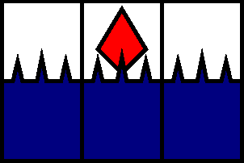
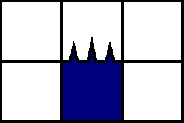
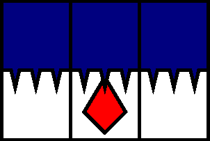
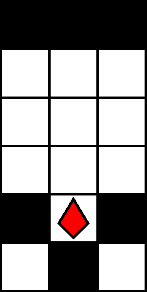
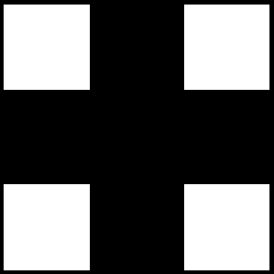

階層別指針
600 m型






600 m型は針ステージです*1．初出は深度 600–700 mです．深度 600 mは加速点です．
前期指針
0 列を降下します．ザクロはなるべく取得します．
後期指針
前期指針と同様です．代替案も参照してください．
解説
600 m型は赤 1 色のみからなるステージです． 1 行目の任意の赤石を吸引すると，ステージ上のすべての石が破壊されます．
出現パターンは，ザクロをもつ S1, S2, S3, W1 と，ザクロをもたない S4, W2 の 6 種類です（図 2.6.1–2.6.6: 赤石の描画は省略）．なお，パターン S2 の実際のザクロは定位置から落下するため，図 2.6.2 のとおりに画面上に現れるとは限りません．
注意: パターン S1 は 1 行目に現れることがあります．このため，犬がステージ入場時点でパターン S1 のザクロを取得し，直下の針が作動する場合があります．このときは，着地後または着地前に左（または右）吸引を予約し，同方向に水平移動して針を回避します．または，左右いずれかに 1 段上昇することで針を回避します．
各パターンの中心位置は −1, 0, +1 列のいずれかに限ります．よって，パターン S4 を除く全てのパターンはあるブロックが 0 列に配置されるので， 0 列を潜行すると必ず直近の当該パターンに当たります．この逆に，どのパターンのブロックも −3 列と +3 列に配置され得ないので， −3 列または +3 列を潜行するとどのパターンにも当たりません．無敵状態で 600 m型に入場した場合は， ±3 列を急降下するのも一つの作戦です．
代替: ±1 列を（基本的に）交互に急降下する方法は代替的です．この場合は， +1 列での急降下のあいだに左入力， −1 列での急降下のあいだに右入力し続けることで，パターン S1 の出現に備えることができます．それ以外のパターンおよび出現に対しては，同じ列の急降下を続けるほうが有効な場合があります．この方法は，潜行速度を高めることでパターンへの時間あたり遭遇率を高めることができますが， \(r\) 列の急降下時に \(-r\) 列中心のパターンがもつザクロを回収できなくなります．
0 列の急降下は可能ですが，安全性の面からいえば推奨されません．中心位置が −1 列または +1 列のパターン S1 のザクロ取得に瞬発力を要求されるためです．「愚形・迷子犬」も参照してください．
600 m型は複数のザクロを比較的迅速かつ安全に取得できるため，寿命源および残機源になります．
脚注
- *1 理論的にはパターン W1 および W2 のみからなる針のないステージが生成される可能性がありますが，経験的にはそのようなステージには遭遇しないと予想されます．このため， 600 m型の類別は通常ステージではなく針ステージとしました．
← 500 m型 ⁄ 700 m型 →